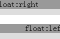
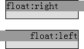
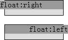
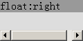
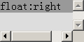
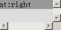

RM8014: IE6 IE7 IE8(Q) 中某些情况下浮动元素会在其浮动方向溢出其包含块
标准参考
W3C CSS2.1 规范中关于浮动一节中提出了一系列精确的规则用于控制浮动的表现，其中第一条便提到：
The left outer edge of a left-floating box may not be to the left of the left edge of its containing block. An analogous rule holds for right-floating elements.
左浮动的框的左外边界（margin-box）不可以出现在它的包含块左边界之左，即左浮动元素所生成的框不能从左侧溢出其包含块。对于右浮动的元素也有相似的规则。
关于 'float' 特性的更多信息，请参考 CSS2.1 规范 9.5.1 Positioning the float: the 'float' property。
问题描述
在 IE6 IE7 IE8(Q) 下，对于宽度超过容器的浮动元素，浏览器违背了浮动基本规则，导致其在浮动方向上溢出包含块。
造成的影响
此问题可能造成浮动元素的溢出方向在 IE6 IE7 IE8(Q) 下与其他浏览器有差异。 若浮动元素的包含块设置了值不为 'visible' 的 'overflow' 特性，则滚动条的生成也会出现差异，甚至影响某些利用滚动条位置编写的脚本。
受影响的浏览器
| IE6 IE7 IE8(Q) |
|---|
问题分析
首先分析一般情况，即浮动元素的宽度大于容器的宽度。
<!DOCTYPE html> <body style="margin:20px;"> <div style="overflow:hidden; width:120px; height:30px; background:#DDD;"> <div style="float:right; width:130px; background:#999;">float:right</div> </div> <br /> <div style="overflow:hidden; width:120px; height:30px; background:#DDD; direction:rtl;"> <div style="float:left; width:130px; background:#999;">float:left</div> </div> </body>
上面代码中包含两组 DIV 元素，宽度为 120px。第一组内包含一个右浮动 DIV 元素，宽度为 130px，大于其容器。第二组内包含一个左浮动 DIV 元素，宽度同样大于容器，同时第二组的容器设置了 'direction:rtl'。
在各浏览器中效果如下：
| IE6 IE7 IE8(Q) | IE8(S) Firefox Chrome Safari Opera |
|---|---|
 |
 |
从截图中可以看到 IE6 IE7 IE8(Q) 对浮动元素溢出容器时的处理与标准浏览器有差别。
为了规避 IE6 IE7 IE8(Q) 中“width/height的设定值可能被其内容撑大”这个 Bug，下面对测试代码进行修改，单独在 IE7(S) IE8(S) 及其他浏览器中进行测试：
<div style="border:1px solid black; width:120px; height:30px; background:#DDD;"> <div style="float:right; width:130px; background:#999;">float:right</div> </div> <br /> <div style="border:1px solid black; width:120px; height:30px; background:#DDD; direction:rtl;"> <div style="float:left; width:130px; background:#999;">float:left</div> </div>
去除容器的 'overflow:hidden'，使浮动元素可以溢出容器，为容器添加了边框。
在各浏览器中效果如下：
| IE6 IE7 IE8(Q) | IE8(S) Firefox Chrome Safari Opera |
|---|---|
|  |  |
- 在 IE7(S) 中，右浮动的元素的右边界出现在了它的包含块之右，同样地，左浮动的元素的左边界也出现在了它的包含块之左。虽然这里仅在 IE7(S) 中进行了测试，但对于 IE6 IE7 IE8(Q) 中的情况也与此结论相符；
- 在 其他浏览器 中，右浮动的元素的右边界没有超出其包含块之右，左浮动元素也同样如此。
可得出结论，IE6 IE7 IE8(Q) 违背了浮动的基本规则。
下面再看浮动元素的宽度大于设置了 'overflow:auto|scroll' 的容器的宽度。
<div style="overflow:auto; width:120px; height:60px; background:#DDD;">
<div style="float:right; width:130px; background:#999;">float:right</div>
</div>
<br />
<div style="overflow:scroll; width:120px; height:60px; background:#DDD;">
<div style="float:right; width:130px; background:#999;">float:right</div>
</div>
将最初的测试样例的代码中 'overflow:hidden' 改为 'overflow:auto' 及 'overflow:scroll'。
在各浏览器中效果如下：
| IE6 IE7 IE8(Q) | IE8(S) Firefox Chrome Safari Opera |
|---|---|
|  |  |
|  |  |
- 在 IE6、IE7、IE8(Q) 中，由于容器的 'direction' 为默认的 ltr，且右浮动元素的右外边界超出了容器包含块的右边界之右，这导致容器设置了 'overflow:auto' 和 'overflow:scroll' 后，浏览器认为包含块宽度不够，所以为容器创建了滚动条；
- 在 其他浏览器 中，右浮动元素的右外边界没有超出容器包含块的右边界，而容器的 'overflow' 为 auto，浏览器认为包含块的宽度足够，所以容器没有出现滚动条。对于 'overflow:scroll'，则创建出的滚动条为失效状态，无法滚动。
解决方案
当文字方向为 'ltr' 时应避免使右浮动元素的宽度超出其包含块的宽度。同样地，当文字方向为 'rtl' 时应避免使左浮动元素的宽度超出其包含块的宽度。
参见
知识库
相关问题
测试环境
| 操作系统版本: | Windows 7 Ultimate build 7600 |
|---|---|
| 浏览器版本: |
IE6 IE7 IE8 Firefox 3.6.2 Chrome 5.0.360.0 dev Safari 4.0.5 Opera 10.51 |
| 测试页面: | float_overflow.html float_over_scroll.html |
| 本文更新时间: | 2010-07-20 |
关键字
float left right 边框 浮动 overflow 溢出